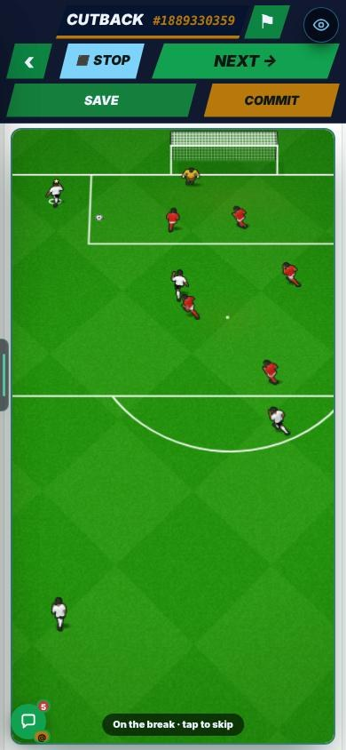
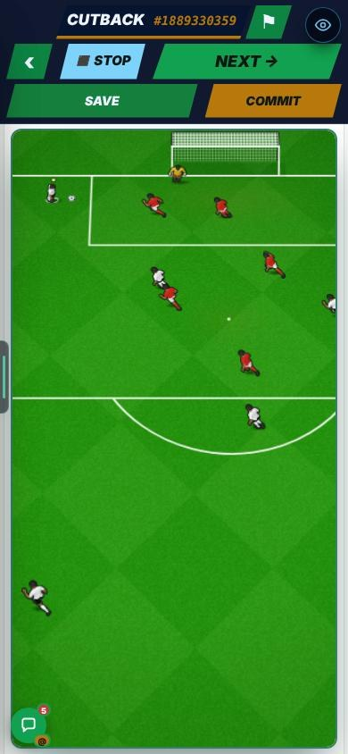
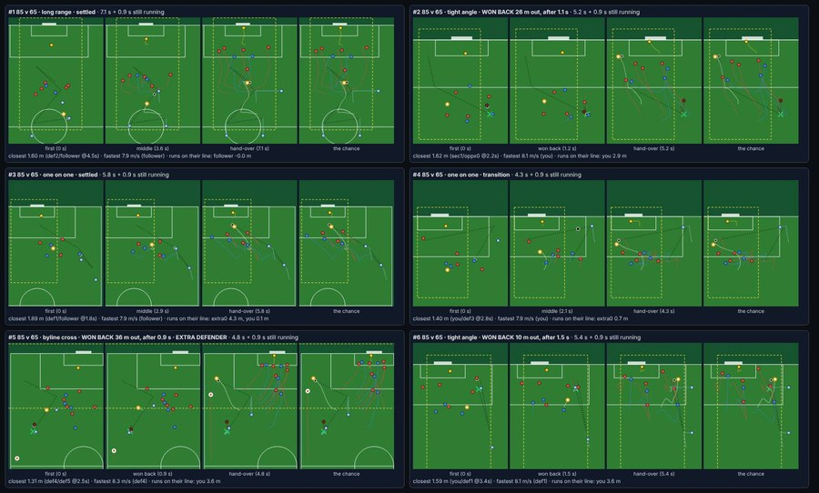
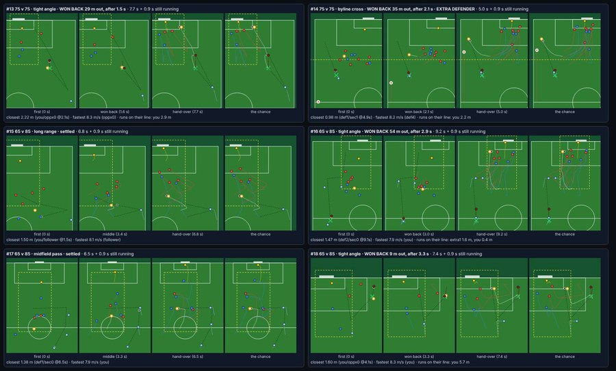
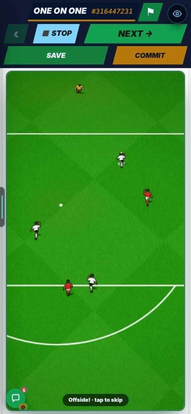
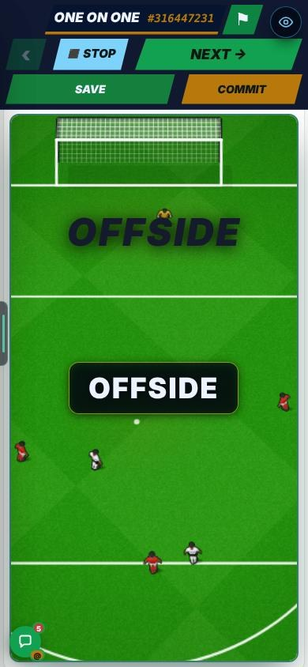

On the Harry branch, not live yet.
Overnight round, 20 Oct 2026. Behind Settings → Quick → Full highlights rebuild: Off | On. Merged with the header and volley work (B10). In Admin → Patch notes this is v0.93.
When a build-up handed over to the chance, the picture could jump. The worst jump was 1.70 px and 1.79 px. Resizing the window during a build-up moved it 20.5 px.
Not in the report.
The frame now stays on the chance during a resize. Across 1,226 hand-overs, headers and volleys included, the worst jump is 0.088 px. In a browser it read 0.00 to 0.07 px. A resize during a build-up now moves it 0 px. The test is fhrCameraHandover.mts. The pitch is 366 or 384 px wide. Reasoned: the merge did not change that code.


Look for: the build-up, then the chance, with the pitch staying put. 9 seconds, on a phone screen.
The build-up and the hidden match were separate things.
Reasoned from the report’s words “one system”. The report does not say what was wrong before.
Each build-up now starts where the hidden match won the ball back. One dial sets it all: the strength gap (lib/star/fhr/intel.ts). It scales how often the ball is won back, the press, the passing and the run timing. Three strength pairs, as the report writes them:
Distance from goal where the ball is won back: 20.5 / 23.0 / 25.8 m, in the same order.


After the merge with the header and volley work (B10, v0.88), some volley build-ups were flagged. At even strength 29% were. Men also ran through each other at the hand-over: 10 of 257.
The report does not say what the flag was for.
Every header or volley build-up now ends in the lofted cross. The crosser’s run is played into space. A wide run that mistimes is cut to ×0.4. That 0.4 is the builder’s guess. Volley build-ups flagged: 29% → 16% at even strength. Men running through each other: 10 → 2 of 257.
Before, 48.5% of build-ups had an offside pass that was not called.
Not in the report.
Now 0 of 600 chances at each strength, every kind. A build-up that ends on an offside call hands the ball back. Offsides called per match, before the merge: 0.24 / 0.37 / 0.39. Reasoned: that is the order 85 v 65, 75 v 75, 65 v 85. The report only lists the three numbers.


Look for: the build-up, then “Offside!”, then the OFFSIDE banner. 10 seconds, on a phone screen.
At even strength, chances played fall from 5.47 to 4.99 a match (−8.8%). Goals fall from 1.44 to 1.35. Strong sides are unchanged.
Reasoned: calling offsides stops some chances before they start. The report gives the numbers, not the cause.
Check at even strength that about 5 chances a match still feels right.
No career match was played at 390 × 844 with the switch On. A real-match offside still was not taken.
Turn it On, play a match on a phone, and watch a build-up and an offside.
The full npm run build was not run. The report says: memory.
Run it on a bigger machine before this goes to main.
Two shared files changed.
CanvasMatch.tsx: the frame stays on the chance during a resize, an extra opponent on a regain, and the hand-back when a build-up ends on an offside. hiddenMatch.ts: it hands over the regain information, with no new random draws. canvasEngine.ts is untouched.
Camera. Hand-over jump, worst: 1.70 / 1.79 px → 0.088 px over 1,226 hand-overs, headers and volleys included. Seen in a browser: 0.00 to 0.07 px. Resize during a build-up: 20.5 px → 0. Test: fhrCameraHandover.mts. Pitch widths 366 / 384.
One dial. 85 v 65 / 75 v 75 / 65 v 85: build-ups a match 6.45 / 4.70 / 3.31. Regain from goal 20.5 / 23.0 / 25.8 m. Scrappy 10 / 33 / 52%.
Offsides. Build-ups with an uncalled offside pass: 48.5% → 0, from 600 chances at each strength, every kind. Called per match, before the merge: 0.24 / 0.37 / 0.39.
Cost. Even strength: chances 5.47 → 4.99 (−8.8%), goals 1.44 → 1.35. Strong sides unchanged.
The merge. Volley build-ups flagged at even: 29% → 16%. Men through each other: 10 → 2 of 257. Wide-run mistime ×0.4 (the builder’s guess).
Sheets. 25 chances over 5 sheets. The list says problems: none on all 25. #22 to #25 are free kicks and penalties, marked “THE FOUL FIRST”.
Both are phone-screen recordings of the test screen, not a career match.